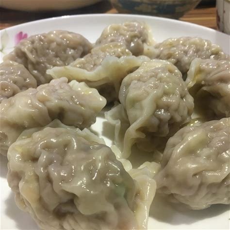
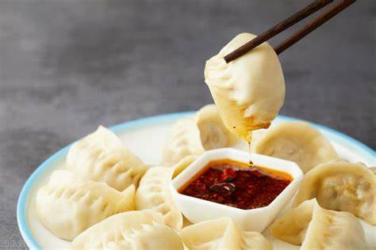

Check Out Our Recipies!
Double Chocolate Cookies
Origin: MichiganSource: Family Recipe
Category: Dessert

My daughter learned to make these cookies at a baking camp at Zingermanns and has tweaked the recipe to fit the taste buds of her siblings. They are extremely sugary so the salt helps to balance it. Note, these cookies are best eaten very quickly.
Recipe Ingredients
- Unsalted butter
- Granulated Sugar
- Packed light or dark brown sugar
- Large egg
- Pure vanilla extract
- Semi-sweet chocolate chunks (melted)
- All-purpose flour
- Natural unsweetened cocoa powder
- Baking soda
- Salt
- Semi-sweet chocolate chunks
Recipe Steps
- In a mixing bowl cream together the butter, granulated sugar, and brown sugar
- Add the egg and vanilla extract and beat well
- Add the melted chocolate
- In a separate bowl combine the flour, baking soda, cocoa powder and salt
- Combine the wet and dry ingredients
- Add the unmelted chocolate chunks.
- Form 15 cookies and place on a baking sheet.
- Cook for 12 to 13 minutes at 350 degrees.
Additional Food images


Chinese Dumpling
Origin: ChinaSource: flour, pork and cabbage
Category: Main Dish

Chinese dumplings (Jiaozi, 饺子) are stuffed parcels made of unleavened dough and savoury fillings consisting of minced ingredients like meat, egg, tofu, or vegetables. They can be boiled, pan-fried or steamed.
Recipe Ingredients
- flour
- Water
- Pork
- Cabbage
- Salt
- Pepper
- Oil
Recipe Steps
- Mix flour and water in a bowl to make dough.
- Make the dough into small ball and flatten them to make the dumpling skin.
- Mix pork mince, cabbage, salt, pepper, and oil in a bowl to make the fillings.
- Fill right amount of pork fillings in the dumpling skin and fold it to preferred shape.
- Boil water in a pot.
- Boil dumplings in the pot around 7 minutes untill the dumplings float on the water, that means the dumplings are fully cooked!
- Take out the dumplings and flavor it with soy sauce as your preference.
Additional Food images
 
Chinese Hot and Sour Soup
Origin: ChinaSource: tofu, mushrooms, and bamboo shoots
Category: Soup

Chinese Hot and Sour Soup (酸辣汤) is a popular and flavorful soup known for its spicy and tangy taste. It's made with a variety of ingredients including tofu, mushrooms, and bamboo shoots, etc.
Recipe Ingredients
- Tofu
- Mushrooms
- Water
- Pork mince
- Bamboo shoots
- Carrot
- Soy sauce
- Vinegar
- Eggs
- White pepper
Recipe Steps
- Stir fry the pork mince and mushrooms in a pot.
- Add water to the pot to half and boil it.
- Adde bamboo shoots, sliced carrot, and diced tofu to the pot and boil it.
- Add soy sauce, vinegar, and white pepper and make a taste test.
- Add eggs to the pot and mix the soup.
- Wait until all the ingredients are cooked.
Additional Food images